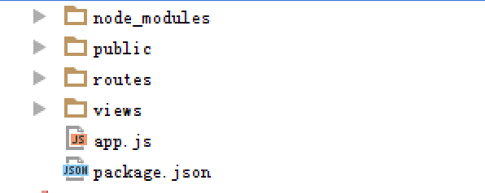
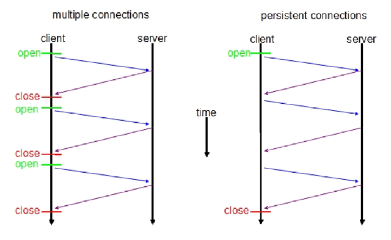
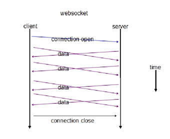
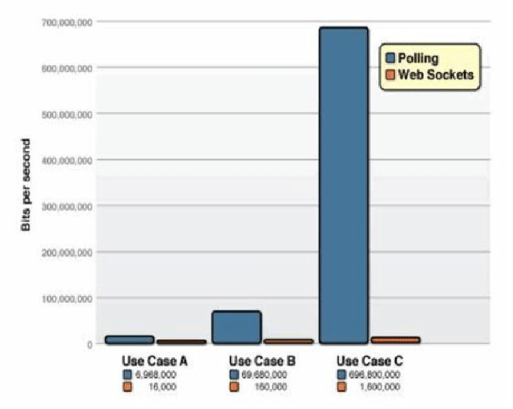

NodeJS + WebSocket
Express + socket.io
2015-07-27
丁香园前端组
主讲人：程仁
NodeJS + WebSocket
Express + socket.io
2015-07-27
丁香园前端组
主讲人：程仁
Node是一个服务器端 JavaScript 解释器，可以快速构建网络服务及应用。
<script type='text/javascript'>
//阻塞
get_a_request();//从请求列队中得到一个请求
handle_request();//处理这个请求，如：读写数据库，读文件
feedback(); //返回处理结果
get_next_request();//从列队中获得下一个请求
//非阻塞
get_a_request();
handle_request(function(){//处理这个请求
feedback(); //等到处理完成后，返回处理结果
});
get_next_request();//从列队中获得下一个请求
</script>
var http = require("http");
http.createServer(function(request,response){
response.writeHead(200,{"Content-Type":"text/plain"});
response.end("Hello World\n");
}).listen(3456);
console.log("server running at 127.0.0.1:3456");
是一个简洁而灵活的 node.js Web应用框架
提供一系列强大特性帮助你创建各种Web应用

WebSocket是一种基于TCP链接的双工的通讯方式
轮询(polling)。轮询是在特定的的时间间隔(time interval)（如每1秒），由浏览器对服务器发出HTTP request，然后由服务器返回最新的数据给客服端的浏览器。
服务器可以
主动传送数据给客户端
大大减少长连接的请求头大小
百万级别websocket常连接：http://colobu.com/2015/05/22/implement-C1000K-servers-by-spray-netty-undertow-and-node-js/
 
| 名称 | 定义 | 优点 | 缺点 | 实例 |
|---|---|---|---|---|
| 轮询 | 定时发送Ajax | 后端程序编写容易 | 浪费带宽和服务器资源 | 适于小型应用 |
| 长连接 | iframe发送长连接请求或采用xhr请求 | 消息即时到达，不发无用请求 | 服务器维护一个长连接会增加开销 | Gmail聊天 |
| websocket | 一次连接，双工通信 | 实时避免无用数据 | 兼容性 | 股票等实时获取数据应用 |

适用于需要实时通信的场景
如：实时信息监控，即时消息传递，网页游戏，股票信息推送等等
| 浏览器 | 版本 |
|---|---|
| Chrome | 4+ |
| firefox | 4+ |
| IE | 10+ |
| Safari | 5+ |
一个WebSocket库，包括了客户端的js和服务器端的js
构建可以在不同浏览器和移动设备上使用的实时应用
自动根据浏览器从WebSocket、AJAX长轮询、Iframe流等等各种方式中选择最佳的方式来实现网络实时应用
//server code
var io = require('socket.io')(server); // express server
io.on('connection', function(socket) {
socket.emit('news', { hello: 'world' });
socket.on('my other event', function (data) {
console.log(data);
});
});
//client code
<script src="/socket.io/socket.io.js"></script>
<script>
var socket = io.connect();
socket.on('news', function (data) {
console.log(data);
socket.emit('my other event', { my: 'data' });
});
</script>
var socket = io.connect();
// 下一页PPT
$('#next').click(function() {
socket.emit('next', {
text: 'next'
});
});
// 上一页PPT
$('#prev').click(function() {
socket.emit('prev', {
text: 'prev'
});
});
io.on('connection', function(socket) {
socket.on('prev', function(data) {
//广播出自己之外的client
socket.broadcast.emit("prev", {
text: "prev"
});
// 通知所有已连接客户端的人
// io.sockets.emit('chat', {
// data: data
// });
});
socket.on('next', function(data) {
socket.broadcast.emit("next", {
text: "next"
});
});
});
var socket = io.connect();
// 接收prev weksocket事件
socket.on("next", function(data) {
nextSlide();
});
// 监听prev weksocket事件
socket.on("prev", function(data) {
prevSlide();
});